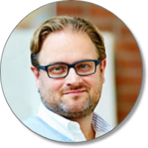

Vårkonferens Agila Örebro
Örebro Universitet | 25 april 2024

- Rikard Olsson - Keji Adedeji - Magnus Billgren - Darja Šmite - Francesca Cortesi - Blixttal -
Plats: Aula Nova, Örebro Universitetet.
Tid: 08:00-17:00, 25:e april, 2024
Kostnad: 1.600 exkl moms (2.000 inkl moms). För pappersfaktura tillkommer en hanteringsavgift på 50 kr.
Vad ingår: Alla spännande tal + fika, lunch och givetvis kaffe/te under dagen. Kom ihåg att ange eventuella önskemål om specialkost.
Språk: Huvudtalen och Blixttalen kommer att vara på svenska och engelska.
Observera att anmälan är bindande och då vi är en ideell förening har vi inte möjlighet att köpa tillbaka biljetter. Däremot går det bra att ge bort sin biljett - kontakta oss för namnändring.
Middag: I år kommer vi också erbjuda möjlighet att delta på en middag på kvällen, men platserna är begränsade och erbjuds enligt principen först till kvarn. Kostnad: 410 kr (685 kr inklusive dryckespaket).
Talare 1: Rikard Olsson
Under Agila Örebro kommer Rikard att beskriva hur vi genom att applicera Beyond Budgetings principer kan säkerställa att vi uppnår såväl agilitet i de finansiella planeringsprocesserna - samt hur vi genom att skrota de rigida och oagila traditionella budgetprocesserna kan uppnå ”organisatorisk agilitet” (business agility).
Rikard Olsson är VD för Beyond Budgeting Round Table (www.bbrt.org) och Affärsområdesansvarig för CFO Office hos Ekan Management. Han har under 20 år arbetat i linjen, bl.a. som ansvarig för finansiell rapportering & planering och strategiprocessen för den globala forskningsorganisationen hos AstraZeneca, och som projektledare för ett flertal större implementeringsprojekt för att skapa agila planeringsprocesser - i såväl privata som offentliga organisationer i Sverige och internationellt. Rikard har under de senaste åren varit talare vid ett flertal konferenser, men även utbildat individer och organisationer i - och hur - finansiella planeringsprocesser kan stödja agila transformationer.
Talare 2: Keji Adedeji
"Taming your gremlins: an antidote guide for product people" A discussion of the “gremlins” that plague people at work, and some of the antidotes required to help manage them.
Keji is Product Director for Professional at the Financial Times where they are working to bring the FT’s authoritative research, insight and analysis into the workflows and work-lives of professionals and organisations around the world. Keji has been honing her skills in product management for over a decade, with a strong focus on B2B/B2B2C, drawing experience from diverse industries like edTech, travel eCommerce, customer experience insights and video research insights.
In her approach to leadership and product management, Keji prioritises curiosity, customer focus and leading with empathy, openness, and transparency. Keji's commitment to learning and self-development has naturally evolved into a passion for developing others, fostering talent and advocating for diverse and safe work environments.
Away from the job, Keji's love for music and storytelling mean you can often find her deep in a book or frequenting gigs and jam nights whenever she can. If you’re lucky, you might catch her in conversation about anything from how to set teams up for success, to the virtues of the boom-bap era of hip hop.
Talare 3: Magnus Billgren
"Speed Layers" Under Agila Örebro kommer Magnus Billgren att föreläsa om sin modell Speed Layers. Denna modell har framgångsrikt implementerats runtom i världen av ledande företag såsom Dolby, Ericsson, Würth, Worldline och flertalet startups och scaleups. I denna föreläsning kommer du att ta del av konkreta fallstudier och erhålla en ny synvinkel för att utveckla och driva din teknologiportfölj. Med en gedigen erfarenhet av att hjälpa teknologiföretag över hela världen att skapa framgångsrika produkter, och med över 200 produktprojekt och mer än 20 000 utbildade personer bakom sig, har Magnus Billgren satt sin prägel på hur vi utvecklar produkter idag.
Magnus Billgren stöttar bolag som Ericsson, Spotify, inriver, Wittra, IBM, Vendemore, Oracle, Tele2, Volvo, Scania m.fl. att utveckla framgångsrika produkter. Han är en av intiativtagarna till ISPMA, grundare till tolpagorni thoughts, Talk Show host för världens största product show, anlitad föreläsare på konferenser och universitet. Med bakgrund från ABB och grundare av två dotcom bolag som överlevde har han en gedigen meritlista. Förutom teknik och ekonomi studier har han forskat inom statistik och fördjupat sig i filosofi. Han ligger även på topplistan över personer med dåliga skämt, trots att han är skåning.
Talare 4: Darja Šmite

Thanks to remote working individuals feel better and produce, but what about agile teamwork?
Working from home (WFH) or telework was traditionally seen as a rare and voluntary practice until COVID-19. After the better-than-expected forced WFH experiences,
many knowledge workers are reconsidering their return to the office, opting for remote work occasionally or indefinitely. Companies are adapting quickly to meet
this demand, but do we have enough knowledge about remote work at this scale to make informed decisions? Professor Darja Smite will present evidence from
Scandinavian companies, discussing the benefits of remote work for individuals' well-being and work/life balance, as well as its impact on teamwork and
agile practices. The presentation draws on data from access cards, commits, calendars, surveys, work policies, and interviews.
Darja Smite is a professor of Software Engineering at Blekinge Institute of Technology, a part-time research scientist at SINTEF in Norway and an independent consultant. She leads research efforts focusing on remote and hybrid working. Her research interests include distributed development and outsourcing, productivity measurement, organizational culture, teamwork, self-organisation, innovative behaviours and well-being. Darja Smite conducts research in close collaboration with companies, including Ericsson, Spotify, Telenor, Storebrand and SONY among others. Before her academic career she has been working in software industry in Latvia.
Talare 5: Francesca Cortesi
"Vår resa med continuous discovery: vad vi lärde oss genom att arbeta med opportunity solution tree"
På Agila Örebro kommer Francesca att dela med sig av sina insikter om hur hon framgångsrikt implementerade ”continuous discovery” (kontinuerlig upptäckt) som en kärnkomponent i Hemnets arbetssätt. Hon kommer att ge konkreta exempel från Hemnets resa, inklusive strategier som revolutionerat produktutvecklingen och misstag som erbjudit värdefulla lärdomar.
Dessutom kommer Francesca att erbjuda praktiska råd och verktyg för hur du kan integrera continuous discovery i ditt eget arbete, oavsett om du är i början av din resa eller söker sätt att förbättra din nuvarande process.
Francesca Cortesi är en passionerad produktledare med mer än ett decenniums erfarenhet av att skapa och skala upp digitala produkter. Hennes arbete har inte bara vunnit användarnas hjärtan utan även drivit betydande affärstillväxt. Under hennes karriär har hon arbetat med en innovativ global community för flickor, en tvåsidig marknadsplats i expansionsfas och ett startupföretag inom hållbarhet. Sedan 2019 är hon CPO på Hemnet, en av Sveriges mest älskade produkter. Det som verkligen utmärker Francesca är hennes öppenhet och generositet när det gäller att dela med sig av sina erfarenheter. Genom sina tal och texter delar hon regelbundet med sig av sina lärdomar, inklusive de utmaningar hon har mött, misstagen hon har lärt sig av, och de konkreta stegen hon tar för att driva både sig själv och sitt team framåt.
Sponsorer för konferens 2024

Vad är agilitet?
Vi vill att organisationer, företag, team och individer ska lyckas uppnå sina mål, och hjälpa sina kunder att uppnå sina.
I dagens samhälle snurrar hjulen allt fortare. Långa kommunikationsvägar, krånglig byråkrati och projekt som tar lång tid innan de levererar nytta blir för många ett allt större hinder. Agilitet är att leverera nytta snabbt och i små steg, att enkelt kunna ställa om och möta förändringar, och att snabbt kunna ta emot och agera på feedback för att anpassa sig.
Vi tror att detta kan göras genom smidiga samarbeten som ger snabb återkoppling på hypoteser och utfört arbete. Genom ett nära samarbete mellan beställare och utförare produceras lite i taget och leveransen utvärderas kontinuerligt för att säkerställa att man uppnår förväntad nytta och snabbt kan reagera när det behövs.
Agila Örebro är ett nätverk av många personer från olika miljöer och organisationer med olika kunskap och erfarenhet. Tillsammans hjälper vi varandra att bli bättre.
Vem är det här till för?
Alla är välkomna till vårt nätverk, oavsett vad du jobbar med, vilken bakgrund eller arbetsuppgifter du har. Det viktigaste är att du är beredd att dela med dig av idéer, tankar och frågeställningar. Med det sagt, så har nätverkets medlemmar ofta en bakgrund inom systemutveckling, med typiska representanter från följande yrkeskategorier. Vill du bli medlem? Skicka ett mail till info@agilaorebro.se.
Scrum master/Teammedlem
Du jobbar i ett utvecklingsteam, brinner för det agila arbetssättet, men söker ett bollplank att dela dina idéer med.
Produktägare/Projektledare
Du jobbar med prioritering och planering av arbetsuppgifter mot ett eller flera team.
Teamledare/Chef
Du jobbar som chef eller teamledare, och har som fokus att få ett eller flera team att fungera.
Träffar med nätverket

Vår huvudsakliga aktivitet är lunchträffar, där vi lär oss nytt, diskuterar och äter tillsammans i lånade lokaler. För att intresserade från alla organisationer ska kunna komma, tar var och en med sig sin egen lunch. Anmälan sker till info@agilaorebro.se!
Nästa träff:
- Vi återkommer under våren med schema för lunchträffar. Har du ett ämne du skulle vilja ta upp så kontakta oss på info@agilaorebro.se
Förra träffen:
- 2023-10-10: Strategier för att hantera stressrelaterade risker i hybridprojekt. Presentation finns här
- 2023-05-17: Hur kan Continuous delivery bidra till både nöjdare kunder och medarbetare? - Jonas Samuelsson, Lars Sandberg och Johan Öjdemark berättar hur de jobbat på CAB med detta.
- 2023-04-11: Att misslyckas utan att känna sig misslyckad? - med Stina Odlingson från RetorIT.
- 2022-11-01: Team med egenmakt - vad betyder det? Med Jonas Carlsson om hur man jobbar på Visiba Care.
- 2022-09-27: Pandemin - ett retrospektiv över vad det betydde för de agila teamen
- 2021-03-24: Teal i praktiken - Evolent - Per Evenhamre. Digitalt. Pers presentation finns här!
- 2021-02-12: Distribuerade team och distansarbete. Digitalt.
- 2020-09-02: Roller i och utanför scrum. Digitalt.
- 2020-02-13: Konflikthantering, del 2.
- 2020-01-17: Konflikthantering. Bilderna som Pontus Wadsjö har gjort finns här: länk
- 2019-11-14: (Kväll) Henrik Berglund: Employeeship and Leadership - Key Factors in Agile Transformations
- 2019-09-25: Agilt i olika organisationstyper.
- 2019-08-26: Samarbetsövningar. Keep Talking And Nobody Explodes - spelets hemsida finns här: länk
- 2019-05-08: Konstruktiv feedback
- 2019-03-06: Dysfunktionella team / Hur motiverar man team som inte mår bra
- 2019-02-06: Att coacha agila team. Bilderna finns här: länk. Kolla också in denna användbara poster som Mia Kolmodin på Dandy People har gjort: länk.
- 2018-11-26: Business Agility.
- 2018-10-25: Haverier.
- 2018-10-11: (Kväll) Marcus Hammarberg: The Bungsu story
- 2018-09-25: Vad är ett effektivt team och hur mäter vi det? (Lean Coffee)
- 2018-09-03: "Och nu då?" - Hur vi hanterar stagnation i agila team (Lean Coffee)
- 2018-05-30: Workshop-verktyg. Föreläsning med Jonas Carlsson. Presentationslänk här.
- 2018-03-07: PopcornFlow - En väg till ständiga förbättringar
- 2018-02-01: Vart är vi på väg med det agila?
- 2017-11-30: Vad är värde?
- 2017-10-19: Agila kontrakt
- 2017-09-08: Mätvärden - "In God We Trust - All Other Must Bring Data"
- 2017-05-24: Distribuerade team
- 2017-04-06: Lean
- 2017-03-08: Spretiga sprintar (Unifiering av Udda Uppgifter Undviker Underligt Underhåll)
- 2017-01-19: Cynefin
- 2016-09-28: Tips för utbildning (böcker, bloggar, kurser)
- 2016-08-31: Allmän diskussion
- 2016-05-30: Samspel mellan krav, utveckling och test
- 2016-04-21: Att må bra i agila team
- 2016-03-08: Verktyg
- 2016-01-29: Erfarenheter
- 2015-11-05: Ekonomiska aspekter
- 2015-09-25: Agila lekar
- 2015-08-24: Cargo cult agile
- 2015-06-04: Retrospektiv
- 2015-05-12: Agil transformation
- 2015-04-15: Gruppdynamik i agila team
- 2015-02-25: Uppstart
Vilka vi är
Vi gör det här helt ideellt, men vi har en hel del skoj samtidigt som vi gör det. Vill du vara med?
Kai Wistrand
Anordnar konferens
Forskare på Örebro Universitet.